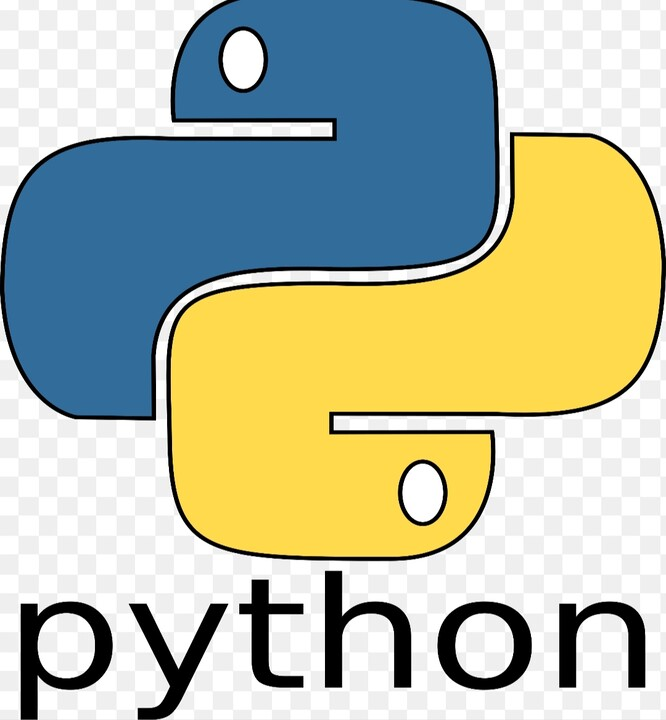
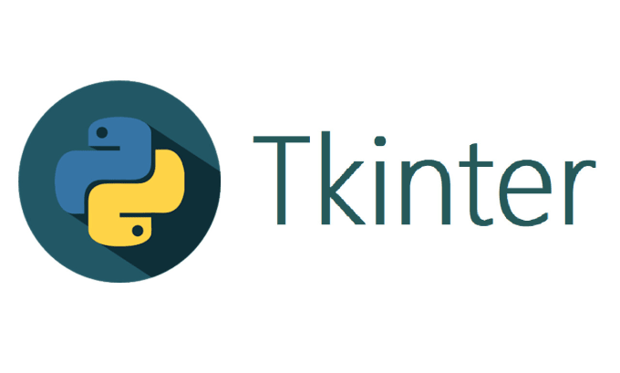

Présentation du Programme
Le programme que j'ai développé pour la gestion des équipes a été conçu pour simplifier l'organisation
des compétitions de Tennis de Table. Dans ce type de compétition, il est crucial de respecter une
hiérarchie entre les équipes.
Concrètement, l'équipe la plus "forte" doit avoir plus de points
(Cumul
des classements de chaque joueur) que l'équipe qui la suit, et ainsi de suite.
Cette
règle peut rapidement devenir un casse-tête lorsqu'il s'agit de répartir les joueurs de manière à
respecter cette cascade de points.
Mon programme aide à gérer cette complexité en facilitant le placement des joueurs tout en s'assurant que la hiérarchie des points soit respectée. Sinon, le programme nous informe qu'il y a une erreur.
Langages et Technologies Utilisés
J'ai développé mon programme, principalement, en utilisant le langage Python. Ce choix a été motivé par la puissance de Python pour le traitement des données et la simplicité de sa syntaxe.
Voici un aperçu des technologies et bibliothèques utilisées :
-  Utilisé pour la logique principale du programme notamment pour la gestion des données et des fonctions.
 Une base de données légère pour stocker les informations relatives aux
joueurs et aux équipes permettant une bonne manipulation des données.
Une base de données légère pour stocker les informations relatives aux
joueurs et aux équipes permettant une bonne manipulation des données.-  Utiliser pour l'aspect graphique du programme rendant l'expérience utilisateur plus agréable.
Grâce à ces technologies, le programme offre une interface intuitive et des fonctionnalités robustes rendant la gestion des équipes plus fluide et plus efficace.